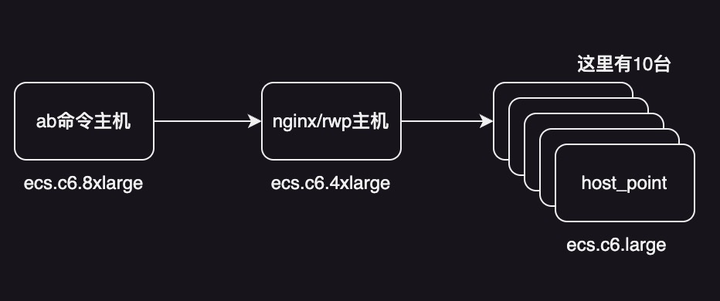
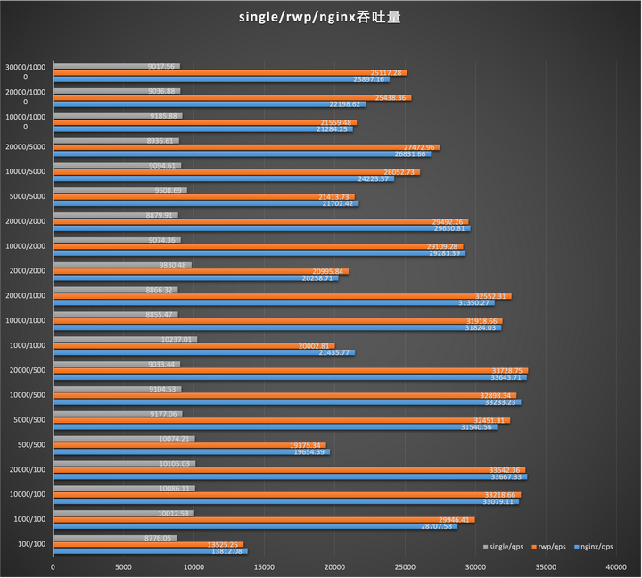
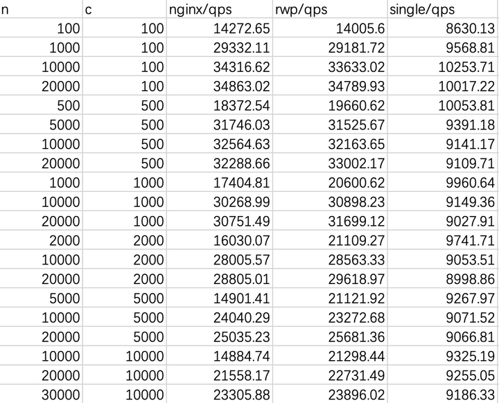

无意中在github上发现了一款rust语言编写的网关，通过简单的性能测试发现rwp的性能比nginx的要好很多。于是就有了接下来的大规模性能测试对比。
RWP:https://github.com/rockjl/rwp
测试环境
在阿里申请了12台ecs服务器来做测试。

这是大概的测试环境。 - ab命令主机，为了能够并发更多的线程，达到更好的效果。所以选用了一台32cpu,64mem的服务器。 - 运行nginx/rwp的主机，为了能够更好的发挥网关性能选用了一台16cpu,32mem的服务器。 - 运行简单web程序的host_point就简单了一些，选用了一台2cpu,4mem的设备。
单台web程序由rust编写，单台web程序的qps也差不多可以达到9000QPS上下。只是简单返回一个hello world。使用最基础的hyper作为web框架基础，使用tokio作为异步核心框架。
static INDEXSTR: &[u8] = b"hello world";
async fn index(_in: http::Request<hyper::body::Incoming>) -> Result<Response<http_body_util::Full<Bytes>>, hyper::Error> {
Ok(Response::new(http_body_util::Full::new(Bytes::from(INDEXSTR))))
}
fn main() {
let mut rt = tokio::runtime::Builder::new_multi_thread()
.enable_all()
.build()
.unwrap();
rt.block_on(async {
let addr: std::net::SocketAddr = ([0, 0, 0, 0], 8080).into();
let listener = tokio::net::TcpListener::bind(addr).await.unwrap();
loop {
let (stream, _) = listener.accept().await.unwrap();
let io = hyper_util::rt::TokioIo::new(stream);
tokio::task::spawn(async move {
if let Err(err) = hyper::server::conn::http1::Builder::new()
.serve_connection(io, hyper::service::service_fn(index)).await
{
println!("Error serving connection: {:?}", err);
}
});
}
});
}
测试流程
- gateway服务器以轮训的方式，轮训到这10台服务器。
- 测试服务器使用ab命令：
ab -n xxx -c xxx http://172.17.10.102:8080/用作测试命令。 - 为了保证测试的准确性，每条测试数据分三次执行，然后选取中间的数据(注意这里不是平均数据)。
- 为了保证测试的准确性，每条ab测试命令的执行间隔至少1分钟。
- nginx开启cpu绑定，且其他配置使用最简单的配置。
- rwp也开启cpu绑定，且其他配置使用最简单的配置。(rwp使用tokio作为核心异步框架，tokio分为核心线程和阻塞线程。核心线程就是操作系统线程，线程数量默认为cpu核心数。rwp的cpu绑定，绑定的就是tokio的核心线程与cpu的执行关系。)
- 优先使用ab命令服务器直接链接单台web服务器做单台性能测试。
- 最终在开始整体的系统测试。
nginx配置
user www-data;
worker_processes 16;
worker_cpu_affinity 0000000000000001 0000000000000010 0000000000000100 0000000000001000 0000000000010000 0000000000100000 0000000001000000 0000000010000000 0000000100000000 0000001000000000 0000010000000000 0000100000000000 0001000000000000 0010000000000000 0100000000000000 1000000000000000;
pid /run/nginx.pid;
include /etc/nginx/modules-enabled/*.conf;
events {
worker_connections 102400;
}
http {
sendfile on;
tcp_nopush on;
#types_hash_max_size 2048;
keepalive_timeout 65;
include /etc/nginx/mime.types;
default_type application/octet-stream;
access_log /var/log/nginx/access.log;
error_log /var/log/nginx/error.log;
include /etc/nginx/conf.d/*.conf;
include /etc/nginx/sites-enabled/*;
upstream test_servers {
172.17.4.100:8080;
172.17.4.103:8080;
172.17.4.102:8080;
172.17.4.105:8080;
172.17.4.99:8080;
172.17.4.104:8080;
172.17.4.97:8080;
172.17.4.106:8080;
172.17.4.98:8080;
172.17.4.101:8080;
}
server {
listen 8180;
server_name localhost;
location / {
proxy_pass http://test_servers;
}
}
}
rwp配置
service:
disable_upgrade_insecure_requests: true
interfaces:
http:
- address: "0.0.0.0:8180"
multi_thread:
nevents: 102400
bind_cpu: all
hosts:
httpbin:
type: round_robin
servers:
- 172.17.4.100:8080 timeout=20s max_fails_durn=5min max_fails=10 fail_timeout=9s
- 172.17.4.103:8080 timeout=20s max_fails_durn=5min max_fails=10 fail_timeout=9s
- 172.17.4.102:8080 timeout=20s max_fails_durn=5min max_fails=10 fail_timeout=9s
- 172.17.4.105:8080 timeout=20s max_fails_durn=5min max_fails=10 fail_timeout=9s
- 172.17.4.99:8080 timeout=20s max_fails_durn=5min max_fails=10 fail_timeout=9s
- 172.17.4.104:8080 timeout=20s max_fails_durn=5min max_fails=10 fail_timeout=9s
- 172.17.4.97:8080 timeout=20s max_fails_durn=5min max_fails=10 fail_timeout=9s
- 172.17.4.106:8080 timeout=20s max_fails_durn=5min max_fails=10 fail_timeout=9s
- 172.17.4.98:8080 timeout=20s max_fails_durn=5min max_fails=10 fail_timeout=9s
- 172.17.4.101:8080 timeout=20s max_fails_durn=5min max_fails=10 fail_timeout=9s
pipes:
http_pipe:
- dispatche: rwp
- return: rwp
routes:
http_test:
protocol: http
in:
type: regex
pattern: "^/w*"
out:
type: network
path: "/"
out_host: httpbin
pipe: http_pipe
最终测试结果

添加图片注释，不超过 140 字（可选）
| n | c | nginx/qps | rwp/qps | single/qps |
|---|---|---|---|---|
| 100 | 100 | 13812.08 | 13525.25 | 8776.05 |
| 1000 | 100 | 28707.58 | 29946.41 | 10012.53 |
| 10000 | 100 | 33079.11 | 33218.66 | 10086.11 |
| 20000 | 100 | 33667.33 | 33542.36 | 10105.03 |
| 500 | 500 | 19654.39 | 19375.34 | 10074.21 |
| 5000 | 500 | 31540.56 | 32451.31 | 9177.06 |
| 10000 | 500 | 33233.23 | 32898.34 | 9104.53 |
| 20000 | 500 | 33643.71 | 33728.75 | 9033.44 |
| 1000 | 1000 | 21435.77 | 20002.81 | 10237.01 |
| 10000 | 1000 | 31824.03 | 31918.66 | 8855.47 |
| 20000 | 1000 | 31350.27 | 32552.31 | 8866.32 |
| 2000 | 2000 | 20258.71 | 20995.84 | 9830.48 |
| 10000 | 2000 | 29281.39 | 29109.28 | 9074.36 |
| 20000 | 2000 | 29630.81 | 29492.26 | 8879.91 |
| 5000 | 5000 | 21702.42 | 21413.73 | 9508.69 |
| 10000 | 5000 | 24223.57 | 26052.73 | 9094.71 |
| 20000 | 5000 | 26831.66 | 27472.96 | 8936.61 |
| 10000 | 10000 | 21284.25 | 21559.48 | 9185.88 |
| 20000 | 10000 | 22198.62 | 25438.36 | 9036.88 |
| 30000 | 10000 | 23897.16 | 25117.28 | 9017.56 |
从测试数据来看，并发量越高，反而rwp的性能会略高于nginx。
我还有另一套测试数据，是根据不同的测试流程测试出来的数据
注意：我不知道哪一种测试流程更加的准确，但个人认为，服务器在生产环境承载并发峰值的数据应该是瞬时的，正常在服务器没有被攻击的情况下不会持续太久。所以个人认为上边的测试流程更加准确。由于rwp核心异步框架使用的是tokio，我们使用的是tokio的多线程模式，tokio的多线程模式需要预热，所以rwp刚启动以后的第一次执行数据qps会偏低算是正常现象。
测试流程：
- gateway服务器以轮训的方式，轮训到这10台服务器。
- 测试服务器使用ab命令：
ab -n xxx -c xxx http://172.17.10.102:8080/用作测试命令。 - 为了保证测试的准确性，每条测试数据分10次，每次命令之间执行无时间间隔。数据取10次的平均值。
- nginx开启cpu绑定，且其他配置使用最简单的配置。
- rwp也开启cpu绑定，且其他配置使用最简单的配置。(rwp使用tokio作为核心异步框架，tokio分为核心线程和阻塞线程。核心线程就是操作系统线程，线程数量默认为cpu核心数。rwp的cpu绑定，绑定的就是tokio的核心线程与cpu的执行关系。)
- 优先使用ab命令服务器直接链接单台web服务器做单台性能测试。
- 最终在开始整体的系统测试。

添加图片注释，不超过 140 字（可选）